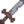
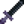
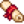
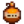

Mines
| Mines | |
 | |
 | |
| Fermé : | Jamais |
| Occupants : | |
Les Mines se trouvent au Nord de la zone de la Montagne (au Nord Est de la Scierie et à l'Ouest de la Guilde des aventuriers). Elles sont bloquées par des débris rocheux jusqu'au 5 de Printemps (année 1), lorsque le joueur reçoit une lettre.
Aperçu
Il y a un total de 120 étages (ou niveaux) dans les Mines. La qualité (type) et la quantité des minerais trouvés augmente au fur et à mesure que le joueur s'enfonce dans les Mines. Ces Mines sont remplies par des petits rochers et des parcelles de terre. Les rochers peuvent être minés avec une Pioche afin d'obtenir de la Pierre et des Géodes. Une Houe peut être utilisée sur les parcelles de terre pour collecter des Minéraux, Artefacts, minerais, de l'Argile ou encore des Carottes de cavernes.
Pour aller plus loin dans les Mines, une échelle doit être trouvée à chaque étage. Elle apparaît parfois quand le joueur brise un rocher ou quand un ennemi est tué (tuer des ennemis ne consomme pas d'énergie). Si un étage est "infesté" ou "envahi" par des monstres, tous les ennemis doivent être abattus afin de faire apparaître l'échelle. Après être descendu d'un niveau, le joueur est invulnérable pendant 1 seconde.
S'évanouir dans les Mines d'épuisement (lorsque l'Énergie atteint 0) ou quand il est 02h00 du matin, fait perdre au joueur 10% de son or, jusqu'à un maximum de  1 000po.
1 000po.
S'évanouir en perdant toute sa Santé fait perdre au joueur entre 5% et 25% de son or (jusqu'à un maximum de  15 000po)[1] et divers objets de son inventaire, incluant les Armes et Outils (sauf l'Épée galactique). Si des outils sont perdus, ils seront renvoyés le lendemain par courrier, mais les cannes à peche et les armes ne seront pas renvoyées. Le joueur se réveillera à l'entrée des Mines, trouvé et ramené par un des villageois.
15 000po)[1] et divers objets de son inventaire, incluant les Armes et Outils (sauf l'Épée galactique). Si des outils sont perdus, ils seront renvoyés le lendemain par courrier, mais les cannes à peche et les armes ne seront pas renvoyées. Le joueur se réveillera à l'entrée des Mines, trouvé et ramené par un des villageois.
Les objets perdus sont revendus par Marlon à la Guilde des aventuriers. Un seul objet perdu peut être racheté, à n'importe quel moment. Son prix sera alors son prix de base (donc l'or qui serait obtenu si on vendait l'objet). Le service de retour des objets par Marlon persiste jusqu'à la prochaine fois où le joueur perd des objets dans les Mines, dès lors les anciens objets sont remplacés par les nouveaux.
Un Wagonnet de voyage rapide se trouve dans l'entrée des Mines. Il est débloqué en complétant les Paquets de la chaufferie ou en achetant le Formulaire de développement communautaire de Joja.
Contenu
Étages
Les Mines sont constituées de 120 étages. Ces étages sont divisés en trois sections, de 40 niveaux chacune, avec leur propre thème. La première section est sur le thème de la terre marron, la deuxième sur le thème de la glace, et la troisième sur le thème de la lave et du violet foncé. Les 10 derniers étages de chaque section sont une variation du thème principal. Ceux de la première section (étage 31-39) sont sur le thème de l'ombre, ceux de la deuxième (70-79) sur le thème d'un château, et ceux de la troisième (110-119) sur un thème cramoisi sombre.
Les étages correspondants dans chaque section ont la même disposition. Par exemple, les étages 1, 41 et 81 ont la même disposition, comme pour les étages 2, 42 et 82, etc.
Le contenu des wagonnets de Charbon sont réinitialisés chaque début d'année.
| Étage | Thème | Ennemis | Trésors | Notes |
|---|---|---|---|---|
| Entrée | Terre marron | Aucun |  Épée rouillée | On y trouve un Wagonnet Le Nain vit à travers le passage bloqué à l'Est. (Une Pioche en acier ou une Petite bombe est nécessaire pour débloquer le passage.) |
| 1 - 9 | Terre marron | Du Minerai de cuivre commence à apparaître dès l'étage 2 Gemmes trouvables: Améthyste, Topaze, Quartz, et Cristal de terre | ||
| 10 | Terre marron | Aucun | ||
| 11 - 19 | Terre marron, Mauvaises herbes | L'étage 12 a un wagonnet contenant 6 morceaux de charbon à la fin du chemin. Une échelle est toujours présente à la fin du chemin, même si l'étage est infesté. L'étage 18 a un wagonnet contenant 6 morceaux de charbon en bas à droite du niveau. L'étage 19 est disposé en spirale. | ||
| 20 | Terre marron, Mauvaises herbes | Aucun | Pêche: Poisson spectral, Poisson pierre, Gelée des cavernes | |
| 21 - 29 | Terre marron, Mauvaises herbes | L'étage 28 a un wagonnet contenant 6 morceaux de charbon en bas à droite du niveau. | ||
| 30 | Terre marron | Aucun | Pas de trésor | |
| 31 - 39 | Ombre, terre grise | Les Géodes sont communes. L'étage 38 a un wagonnet contenant 6 morceaux de charbon en bas à droite du niveau. | ||
| 40 | Terre gelée | Aucun | ||
| 41 - 49 | Terre gelée | Minerai de fer, Géode gelée, Aigue-marine, Larme gelée, et Jade commencent à apparaître. L'étage 45 se réinitialise au début de chaque année. | ||
| 50 | Terre gelée | Aucun | Les Diamants commencent à apparaître (1 dans 500 pierres). Chaque étage après 50 augmente cette fréquence de 0.00016 (soit 1 dans 100 pierres à l'étage 100). | |
| 51 - 59 | Terre gelée | Esprits de poussière abondants (Charbon). L'étage 52 a un sac de charbon près de la fin du chemin. L'étage 58 a un sac contenant 6 morceaux de charbon en bas à droite du niveau. L'étage 59 est disposé en spirale. | ||
| 60 | Terre gelée | Aucun | Pêche: Poisson-glace, Poisson spectral, Gelée des cavernes | |
| 61 - 69 | Terre gelée | L'étage 68 a un sac contenant 6 morceaux de charbon en bas à droite du niveau. | ||
| 70 | Château gelé | Aucun | ||
| 71 - 79 | Château gelé | L'étage 78 a un sac contenant 6 morceaux de charbon en haut à gauche du niveau. | ||
| 80 | Lave, terre violette | Aucun | ||
| 81 - 89 | Lave, terre violette | Minerais d'or et Géodes de lave commencent à apparaître. Émeraudes, Quartz de feu, et Rubis sont communs. L'étage 85 se réinitialise au début de chaque année. | ||
| 90 | Lave, terre violette | Aucun |  Lame d'obsidienne | |
| 91 - 99 | Lave, terre violette | L'étage 92 a un sac de charbon près de la fin du chemin. L'étage 98 a un wagonnet contenant 6 morceaux de charbon en bas à droite du niveau. L'étage 99 est disposé en spirale. | ||
| 100 | Lave, terre violette, Mauvaises herbes | Aucun | Pêche: Anguille de lave, Gelée des cavernes | |
| 101 - 109 | Lave, terre violette, Mauvaises herbes | Les Pierres mystiques commencent à apparaître. L'étage 108 a un wagonnet contenant 6 morceaux de charbon en haut à droite du niveau. | ||
| 110 | Lave, terre cramoisie | Aucun | ||
| 111 - 119 | Lave, terre cramoisie | Les Géodes de lave sont communes. L'étage 118 a un wagonnet contenant 6 morceaux de charbon en haut à gauche du niveau. | ||
| 120 | Lave, terre violette, Mauvaises herbes | Aucun | Étage final |
Étages (dangereux)
Quand l'option dangereuse est activée dans les Mines (soit par la quête "Menace dans les profondeurs" soit en activant l'Autel de Challenge), les thèmes des étages, les objets à ramasser, et les monstres seront différents des mines normales. Des Slimes en tas peuvent apparaître dans n'importe quel étage, et seront colorés selon la couleur des Slimes de l'étage en mode normal.
| Étage | Thème | Ennemis | Trésors | Notes |
|---|---|---|---|---|
| Entrée | Terre marron | Aucun | Épée rouillée | On y trouve un Wagonnet Le Nain vit à travers le passage bloqué à l'Est. (Une Pioche en acier ou une Petite bombe est nécessaire pour débloquer le passage.) |
| 1 - 9 | Terre bleue | Du Minerai de cuivre commence à apparaître dès l'étage 2. Gemmes trouvables: Améthyste, Topaze, Quartz, et Cristal de terre. Toutes les gemmes peuvent être trouvées sauf les Diamants quand le joueur a atteint le fond des Mines. Des objets de la Plage apparaissent, comme Algues, Corail, Coquillage, Coquille arc-en-ciel, Huître, Coque, et Palourde. Il y a une toute petite chance qu'une Perle apparaisse. Le Minerai radioactif commence à apparaître sur les étages qui ne sont pas des multiples de 5. | ||
| 10 | Terre bleue | Aucun | ||
| 11 - 19 | Terre bleue, Mauvaises herbes | L'étage 12 a un wagonnet contenant 6 morceaux de charbon à la fin du chemin. L'étage 18 a un wagonnet contenant 6 morceaux de charbon en bas à droite du niveau. L'étage 19 est disposé en spirale. | ||
| 20 | Terre bleue | Aucun | Pêche: Poisson spectral, Poisson pierre, Gelée des cavernes | |
| 21 - 29 | Terre bleue, Mauvaises herbes | L'étage 28 a un wagonnet contenant 6 morceaux de charbon en bas à droite du niveau. | ||
| 30 | Ombre, terre grise | Aucun | Aucune récompense | |
| 31 - 39 | Ombre, terre grise | Les Géodes sont communes. L'étage 38 a un wagonnet contenant 6 morceaux de charbon en bas à droite du niveau. | ||
| 40 | Forêt magique | Aucun | ||
| 41 - 49 | Forêt magique | Minerai de fer, Géode gelée, Aigue-marine, Larme gelée, et Jade commencent à apparaître. Des Acajous, Bois, Grandes souches, Grandes bûches, Mauvaises herbes, et Gazon apparaissent au sol avec des objets de cueillette de forêt, comme des Champignons rouges, Crosse de fougère, Morilles, Champignons violets, et Chanterelles. | ||
| 50 | Forêt magique | Aucun | Les Diamants commencent à apparaître (1 dans 500 pierres). Chaque étage après 50 augmente cette fréquence de 0.00016 (soit 1 dans 100 pierres à l'étage 100). | |
| 51 - 59 | Forêt magique, Toiles d'araignées | De nombreuses toiles d'araignées ralentissent le joueur s'il se prend dedans. L'étage 52 a un sac de charbon près de la fin du chemin. L'étage 58 a un sac contenant 6 morceaux de charbon en bas à droite du niveau. L'étage 59 est disposé en spirale. Les étages sont considérablement plus sombres que les 40 - 50 et ont un effet de brouillard. | ||
| 60 | Forêt magique | Aucun | Pêche: Poisson-glace, Poisson spectral, Gelée des cavernes | |
| 61 - 69 | Forêt magique, Toiles d'araignées | L'étage 68 a un sac contenant 6 morceaux de charbon en bas à droite du niveau. | ||
| 70 | Château d'os | Aucun | ||
| 71 - 79 | Château d'os | L'étage 78 a un sac contenant 6 morceaux de charbon en haut à gauche du niveau. | ||
| 80 | Champignons, terre violette | Aucun | ||
| 81 - 89 | Champignons, terre violette | Minerais d'or, Géodes de lave, Émeraudes, Quartz de feu, et Rubis commencent à apparaître. Les Monstres peuvent se cacher dans le gazon. | ||
| 90 | Champignons, terre violette | Aucun | Lame d'obsidienne | |
| 91 - 99 | Champignons, terre violette, Mauvaises herbes | L'étage 92 a un sac de charbon près de la fin du chemin. L'étage 98 a un wagonnet contenant 6 morceaux de charbon en bas à droite du niveau. L'étage 99 est disposé en spirale. La traversée des étages peut se révéler compliquée à cause des nombreuses mauvaises herbes et gazon. | ||
| 100 | Champignons, terre violette | Aucun | Pêche: Anguille de lave, Gelée des cavernes | |
| 101 - 109 | Champignons, terre violette, Mauvaises herbes | Les Pierres mystiques commencent à apparaître. L'étage 108 a un wagonnet contenant 6 morceaux de charbon en haut à droite du niveau. | ||
| 110 | Lave, terre marron | Aucun | ||
| 111 - 119 | Lave, terre marron | Les Géodes de lave sont communes. L'étage 118 a un wagonnet contenant 6 morceaux de charbon en haut à gauche du niveau. | ||
| 120 | Champignons, terre violette | Aucun | Étage final |
Récompenses remixées
Choisir les récompenses "remixées" des mines dans le menu Options avancées au début d'une partie fera que les étages à récompenses donneront un objet aléatoire parmi ceux de la liste ci-dessous. Certains étages sont cependant inchangés. Tous les étages ont aussi une chance de donner leur récompense standard.
| Étage | Récompenses possibles | Notes |
|---|---|---|
| 10 | ||
| 20 | ||
| 30 | Aucune récompense | Inchangé |
| 40 | Inchangé | |
| 50 | ||
| 60 | ||
| 70 | Inchangé | |
| 80 | ||
| 90 | ||
| 100 | Inchangé | |
| 110 | ||
| 120 | Inchangé |
Échelles
Les échelles peuvent apparaître à la mort d'un ennemi[2], lorsqu'un rocher est brisé[3], ou peuvent être présentes naturellement[4].
Chaque monstre tué a 15% de chance de faire apparaître une échelle, si tué sur une tuile non obstruée. Cela n'empêche pas l'apparition d'échelles lorsqu'un rocher est brisé.
Certains étages ont une échelle générée naturellement (12, 52, 92, salles au trésor des Cavernes du Crâne). Cela n'empêche pas l'apparition d'échelles lorsqu'un rocher est brisé.
Après qu'un étage a été généré, il y a 95% de chance qu'une échelle essaie d'apparaître. Une tuile aléatoire est choisie, et si elle n'est pas obstruée alors une échelle y est générée. Cela empêche l'apparition d'échelle lorsqu'un rocher est brisé.
Chaque rocher a une chance de base de 2% de faire apparaître une échelle. Cette valeur est ajustée selon la Chance journalière/5 (+/-10% / 5 = +/- 2%) et les buffs de nourriture (chaque point de buff ajoute 1%). L'inverse du nombre de rochers restants après que le rocher soit détruit est ajouté (par exemple 5 rochers restants - 1/5 = 0.2 = 20%, 100 rochers restants = 1/100 = 0.01 = 1%). S'il ne reste aucun ennemi, alors 4% sont ajoutés. Si cette chance est atteinte, alors une échelle apparaît et cela empêche d'autres échelles d'apparaître de la même manière. Dans la Caverne du Crâne, il y a 20% de chance qu'un gouffre apparaisse à la place, ce qui n'empêche pas l'apparition d'autres gouffres/échelles d'apparaître de la même manière.
Caisses et tonneaux
Les conteneurs dans les mines peuvent laisser tomber du butin de façon aléatoire lorsqu'ils sont détruits. Les conteneurs ont autant de chances d'être des caisses que des barils ; le contenu possible n'est pas affecté par le type de conteneur. Au maximum, un objet sera déposé par un conteneur, bien que plusieurs copies de cet objet soient possibles.
La plupart des conteneurs réapparaissent à chaque fois que vous entrez dans un niveau. Les conteneurs sur les plates-formes dans les mines, cependant, ne réapparaissent que la première fois que vous entrez dans un niveau. Une fois ces conteneurs détruits, aucun nouveau conteneur n'apparaîtra sur les plates-formes.
Certains objets en remplacent d'autres selon que vous avez atteint ou non le fond des mines. Lorsqu'il y a deux valeurs, la première est avant d'atteindre le fond des mines, la seconde est après. Les objets possibles trouvés dans les conteneurs et leurs chances sont les suivants[5] :
| Objet | 0-39 | 40-79 | 80+ (incluant la Caverne du Crâne) | Mines difficiles/Caverne du Crâne
(Peut laisser tomber plusieurs objets) |
|---|---|---|---|---|
| Rien | 41.42% | 41.42% | 42% | 44% |
| 9.24% | 9.24% | 5.2% | 8% | |
| 9.24% | 4.62% | 5.2% | 0% | |
| 2.24% | 2.24% | 1.87% | 0% | |
| 2.31% / 0% | 2.31% / 0% | 0% | 2% / 0% | |
| 4.62% | 4.62% | 0% | 0% | |
| 4.62% | 4.62% | 5.2% | 4% | |
| 4.62% | 4.62% | 5.2% | 4% | |
| 0% | 4.62% | 5.2% | 4% | |
| 0% | 0% | 5.2% | 4% | |
| 0% | 0% | 0% | 0.68% | |
| 7.8% | 7.8% | 7.8% / 5.2% | 0% | |
| 4.84% | 0% | 0% | 0% | |
| 0% | 4.84% | 0% | 0% | |
| 0% | 0% | 2.6% | 0% | |
| 0% | 0% | 1.87% | 4% | |
| 2.24% | 0% | 0% | 0% | |
| 2.24% | 0% | 0% | 0% | |
| 0% | 2.24% | 0% | 4% | |
| 0% | 2.24% | 0% | 4% | |
| 0% | 0% | 1.87% | 0% | |
| 0% | 0% | 1.87% | 0% | |
| 0% | 0% | 5.2% | 0% | |
| 0% | 0% | 1.87% | 0% | |
| 0% / 4.62% | 0% | 0% | 4% | |
| 0% | 0% / 4.62% | 0% | 0% / 4% | |
| 0% | 0% | 0% / 2.6% | 0% | |
| 2.31% / 0% | 0% | 0% | 2% / 0% | |
| 0% | 2.31% / 0% | 0% | 0% | |
| 0% | 0% | 0% | 0.23% | |
| 0% | 0% | 0% | 0.23% | |
| 0% | 0% | 0% | 0.23% | |
| 0% | 0% | 0% | 4% | |
| 0% | 0% | 0% | 4% | |
| 0% | 0% | 0% | 0.15% | |
| 0% | 0% | 0% | 0.15% | |
| 0% | 0% | 0% | 0.15% | |
| 0% | 0% | 0% | 0.15% | |
| 0% | 0% | 0% | 0.15% | |
| 0% | 0% | 0% | 0.15% | |
| 0% | 0% | 0% | 0.15% | |
| 0% | 0% | 0% | 0.15% | |
| 0% | 0% | 0% | 0.15% | |
| 0% | 0% | 0% | 0.15% | |
| 0% | 0% | 0% | 0.15% | |
| 0% | 0% | 0% | 0.15% | |
| 0% | 0% | 0% | 0.15% | |
| 0% | 0% | 0% | 0.15% | |
| 0% | 0% | 0% | 0.15% | |
| 0% | 0% | 0% | 0.15% | |
| 0% | 0% | 0% | 0.15% | |
| 0% | 0% | 0% | 0.15% | |
| 0% | 0% | 0% | 0.15% | |
| 0% | 0% | 0% | 0.15% | |
| 0% | 0% | 0% | 0.15% | |
| 0% | 0% | 0% | 0.15% | |
| 0% | 0% | 0% | 0.15% | |
| 0% | 0% | 0% | 0.15% | |
| 0% | 0% | 0% | 0.15% | |
| 0% | 0% | 0% | 0.15% | |
| 0% | 0% | 0% | 0.15% | |
| 0% | 0% | 0% | 0.54% | |
| 0% | 0% | 0% | 0.68% | |
| Objets spéciaux (Voir dessous) |
2.24% | 2.24% | 1.87% | 0% |
Objets spéciaux
Une petite fraction des caisses et des barils (2,2 %) laissent tomber l'un des objets spéciaux suivants[6]. Visuellement, ces caisses et tonneaux ne se distinguent pas des conteneurs contenant du butin standard.
Ces objets spéciaux peuvent également être abandonnés par une petite fraction des monstres. Environ 1,2% des Slimes sont identifiables comme des Slimes spéciaux par des étoiles dorées. Pour tous les autres monstres, moins de 0,2 % des monstres laissent tomber des objets spéciaux au lieu du butin standard, mais ces monstres spéciaux sont identiques aux versions standard.
Parcelles de terre
Le tableau suivant liste les chances de trouver des objets sur une parcelle de terre [7]. Il n'y a aucune différence de procéder à l'aide d'une Houe ou d'une Bombe pour creuser le sol.
| Objet | Chance |
|---|---|
| Rien | 85.9% |
| 5.03% | |
| 4.68% | |
| 1.33% | |
| 0.16% | |
|  Parchemin des Nains I | 0.16% |
| 0.16% | |
| 0.16% | |
| 0.16% | |
| 0.1% | |
| 0.1% | |
| 0.1% | |
| 0.1% | |
| 0.2% | |
| 0.03% | |
| 0.03% | |
| 0.17% | |
| Minerai (selon l'étage) | 1.33% |
| Géode (selon l'étage) | 0.51% |
Étages infestés

Vous rencontrerez occasionnellement des étages infestés de Slimes ou d'autres monstres. Contrairement aux étages normaux, il n'y a aucun rocher et (pour les niveaux infestés de slimes) le sol et les murs sont recouverts de gelée verte. Les objets récupérables au sol comme le quartz ou les champignons peuvent cependant toujours apparaître. Pour passer un étage infesté, vous devez tuer tous les monstres qui s'y trouvent, ainsi une échelle apparaîtra là où le dernier monstre sera tué ou à côté de l'entrée (un message en informe le joueur, disant "Une sortie est apparue").
Un Escalier peut être utilisé pour s'échapper d'un niveau infesté.
Il n'y a pas de schéma pour l'apparition des niveaux infestés, mais un niveau infesté le restera toute la journée. Ils ne peuvent pas apparaître sur les étages d'ascenseur (ceux terminant par 0 ou 5), ni sur les 5 premiers niveaux, le niveau 19, ou les 10 derniers niveaux de chaque section des Mines.[8] Cela inclut les étages 1-4, 41-44, 81-84 (les 5 premiers niveaux de section), les étages 19, 59, 99 (19ème niveau de section), et les étages 31-39, 71-79, 111-119 (10 derniers niveaux de section), ainsi que sur les étages de la Caverne du Crâne selon le même schéma.
Avec ces règles en tête, les étages infestés peuvent donc apparaître aux étages suivant dans les Mines : 6-9, 11-14, 16-18, 21-24, 26-29, 46-49, 51-54, 56-58, 61-64, 66-69, 86-89, 91-94, 96-98, 101-104, 106-109.
Le Buff de l'Huile d'ail empêche les niveaux d'être infestés. L'Huile d'ail doit être consommée avant d'entrer dans l'étage.
Visiter ce genre de niveau de manière répétée peut être une manière très rapide de compléter les Objectifs d'éradication de Monstres de la Guilde.
Les niveaux à champignons
Chaque étage dans la section basse des Mines (étages 81-119), à l'exception des étages d'ascenseur, a 3.5% de chance d'être un niveau à champignons, tant que le même niveau n'a pas déjà été généré comme niveau à champignon dans la journée.[9]
Les niveaux à champignons feront apparaître beaucoup plus de champignons rouges et champignons violets, et comprendront beaucoup moins de roches, y compris de noeuds miniers. Ces étages ont aussi une grande variété de lanternes colorées, en incluant généralement au moins une verte.
Le niveau à champignons n'apparaîtra qu'à la première visite du joueur, et disparaitra immédiatement après qu'il l'ait quitté.
Étages donjons

Les étages des donjons ont une apparence similaire à celle de l'étage unique de la Mine de la carrière. Chaque niveau éligible des Mines a 4.4% de chance de devenir un étage donjon après que la Mine de la carrière a été débloquée.[8] Ces étages ont les mêmes ennemis et les mêmes rochers que la Mine de la Carrière, mais leur niveau est souvent beaucoup plus élevé que celui des étages qu'ils remplacent. Les étages donjons ne sont jamais infestés.[8]
Dans les Mines en mode dangereuses, des étages donjons peuvent apparaître du moment que le jouer a débloqué la Mine de la carrière. Les étages de donjon dangereux font apparaître des Slimes dangereux à la place de Slimes de cuivre et de fer, et ils seront de la couleur correspondant à cette section des Mines dangereuses. and the slimes are the color corresponding to that section of the Dangerous Mines. Les Crânes hantés sont remplacés par des Crânes hantés (dangereux), comme dans les étages 71-79 des Mines dangereuses. Les rochers apparaissent de la même manière que dans la Mine de la carrière, mais il y a également une chance que des Nœuds radioactifs soient aussi présents.
Comme pour les étages infesté, les étages donjons ne peuvent pas apparaître sur les niveaux d'ascenseur ou le premier étage. Ils restent dans l'état d'étage donjon pour toute la journée. Mais au contraire des étages infestés, il peuvent appraître sur les étages 2-4, 19, et 31-39, 42-44, 59, et 71-79, 82-84, 99, et 111-119 (sans les étages 35, 75, and 115, qui ont un ascenseur).
Les joueurs qui n'ont pas d'outils ou d'armes de haut niveau peuvent utiliser un Escalier pour sauter ces étages et gagner du temps.
Le fond des Mines
A l'étage 120 des Mines se trouve la Clé en tête-de-mort. Cette clé est utilisée pour déverrouiller la porte de la Caverne du Crâne dans le Désert de Calico. Elle est aussi utilisée pour débloquer le jeu d'arcade Junimo Kart dans le Saloon du fruit étoilé.
De plus, atteindre cet étage influe sur d'autres mécaniques du jeu :
- Les Tessons prismatiques et les Diamants peuvent être de rares butins de Monstres;
- Des Gemmes peuvent être trouvées en fouillant des Poubelles;
- Des Gemmes peuvent être demandées sur les Quêtes d'embauche sur le panneau d'annonce du Magasin général de Pierre;
- A n'importe quel niveau, les Nœuds de gemme peuvent contenir ces gemmes : Émeraude, Aigue-marine, Rubis, Améthyste, Topaze, et Jade;
- Avant d'atteindre le fond des Mines, les Nœuds de gemme entre les étages 1 - 39 et 41 - 79 contiennent des gemmes spécifiques.[3]
- La plupart des monstres seront plus forts.[10] En particulier :
- Leur Défense sera augmentée de 50%.
- La possibilité de rater un coup (càd qu'un coup ne fasse aucun dégât) sera doublée.
- Les PV seront augmentés d'une valeur aléatoire entre 0 et 100%.
- Les dégâts seront augmentés d'une valeur aléatoire entre 0 et 50%.
- Vingt dispositions alternatives d'étage de mine peuvent commencer à apparaître.
Ces changements sont permanents, et ne se réinitialiseront pas même si la quête "Menace dans les profondeurs" est active.
Autel de challenge

L'Autel de challenge n'est pas disponible avant que le joueur le débloque en entrant dans la chambre de Qi sur l'Île Gingembre et complète la quête "Menace dans les profondeurs". Après cela, l'autel se trouvera à l'étage 120 des Mines. Il fonctionne comme un simple interrupteur ON/OFF, alternant la difficulté des ennemis des Mines entre normal et "dangereux". Cela prend effet le lendemain de l'activation de l'autel.
Lorsque l'état "dangereux" est actif, des nœuds radioactifs peuvent être trouvés dans les Mines, sur lesquels on peut récupérer du Minerai radioactif.
Le jour où le joueur complète la quête "Menace dans les profondeurs", une note de Monsieur Qi peut être trouvéee sur l'Autel, spécifiant qu'il l'a temporairement désactivé et que le joueur peut revenir le lendemain.
Niveaux de difficulté
Les mines peuvent être en mode dangereux de deux façons. Soit par la quête "Menace dans les profondeurs", soit en utilisant l'Autel de challenge. Ces effets peuvent se cumuler. Si aucun n'est actif, le niveau de difficulté est de 0. Si un seul effet est actif, le niveau de difficulté est de 1. Si les deux sont actifs, le niveau de difficulté est de 2.
Bien que ce soit surtout un moyen de basculer entre les Mines normales (difficulté 0) et les Mines "dangereuses" (difficulté > 0), il y a des effets qui se cumulent. Notamment, avoir les deux conditions actives en même temps augmentera les chances suivantes :
- de trouver du Finding Minerai radioactif;
- de faire apparaître des Monstres;
- de faire apparaître des Slimes dangereux empilés;
- que les Araignées aient des partenaires (ce qui fait apparaître plus d'araignées);
- que les monstres tués aient des Diamants et Tessons prismatiques en butin.
Cette difficulté cumulée augmente également les avantages des monstres (plus de dégâts, plus de PV, plus de défense), ce qui rend les Mines beaucoup plus difficiles.
Stratégie
Essaims
Si l'écran devient "brumeux" ou "brillant", de nombreux monstres volants (parmi ceux disponibles dans l'étage en question) vont apparaître et attaquer le joueur. Consommer de l'Huile d'ail empêche cet événement.
Escaliers
Si le joueur a atteint au moins le niveau 2 d'Extraction minière, les étages peuvent être passés en utilisant un Escalier (fabriqué à partir de 99 pierres). Un escalier permet d'instantanément passer à l'étage suivant dans les Mines. Après chaque 5 niveaux, un ascenseur est disponible, permettant d'accéder à cet étage à n'importe quel moment.
Nourriture
En dessous est listée de la nourriture octroyant des Buffs utiles lors d'une expédition dans les Mines. Notez que consommer un plat octroyant un buff va remplacer les buffs déjà actifs. Si la nourriture consommée n'octroie aucun buff, alors les buffs déjà actifs persistent. Le Café et la Triple dose d’espresso sont l'exception à cette règle : ils se cumulent avec les buffs déjà actifs (mais pas entre eux).
| Image | Nom | Ingrédients | Restore | Buff(s) | Durée |
|---|---|---|---|---|---|
| Récompense d'automne | |||||
| Café | |||||
| Beignets de crabe | |||||
| Sauce aux canneberges | |||||
| Aubergine au parmesan | |||||
| Anguille grillée | |||||
| Champignon frit | |||||
| Soda au gingembre | |||||
| Déjeuner chanceux | |||||
| Sucre d'orge magique | N/A | ||||
| Gâteau d’érable |  Sirop d'érable (1) |
||||
| Friandise de mineur | |||||
| Poivron farci | |||||
| Soupe à la citrouille | |||||
| Plateau de racines | |||||
| Anguille épicée | |||||
| Farce | |||||
| Repas énergétique | |||||
| Triple dose d’espresso |
Trivia
- La hache, faux ou pioche peuvent être utilisées pour tuer des monstres.
- La pierre peut être achetée à la Scierie pour
 20po l'unité durant l'année 1, rendant possible de passer l'intégralité des 120 étages en utilisant des Escaliers pour un peu moins de 250 000po (utile pour débloquer tous les étages et y retourner plus tard).
20po l'unité durant l'année 1, rendant possible de passer l'intégralité des 120 étages en utilisant des Escaliers pour un peu moins de 250 000po (utile pour débloquer tous les étages et y retourner plus tard).
- Si tous les monstres d'un étage sont tués, la chance de trouver une échelle sous un rocher brisé augmente de 4%.[11]
- A l'étage 120 se trouvent la Statue de serpent vert et la Statue de serpent violet.
Galerie
L'entrée des Mines

L'entrée bloquée des Mines avant le 5 de Printemps
Un wagonnet rempli de charbon
Liens externes
Les joueurs ayant accès à leurs dossiers de sauvegarde peuvent trouver l'outil "Stardew Predictor" utile pour prévoir quel étage de la Mine sera infesté, à chamignons, etc. Cet outil se trouve ici : https://mouseypounds.github.io/stardew-predictor/.
Références
- ↑ Voir Event::command_minedeath dans le code du jeu.
- ↑ Voir MineShaft::monsterDrop dans le code du jeu.
- ↑ 3,0 et 3,1 Voir MineShaft::checkStoneForItems dans le code du jeu.
- ↑ Voir MineShaft::populateLevel dans le code du jeu.
- ↑ Voir BreakableContainer::releaseContents dans le code du jeu.
- ↑ Voir MineShaft::getSpecialItemForThisMineLevel dans le code du jeu.
- ↑ Voir MineShaft::checkForBuriedItem dans le code du jeu.
- ↑ 8,0 8,1 et 8,2 Voir MineShaft::loadLevel dans le code du jeu.
- ↑ Voir MineShaft::chooseLevelType dans le code du jeu.
- ↑ 10,0 et 10,1 Voir Monster::parseMonsterInfo dans le code du jeu.
- ↑ Voir MineShaft::checkStoneForItems dans le code du jeu.
Historique
- 1.3 : Retire le buff permettant de créer une échelle vers la Caverne du Crâne au niveau 120 des Mines en faisant exploser un objet à l'aide d'une bombe.
- 1.4 : Ajout des étages donjons. Change la manière dont apparaissent les niveau à champignons afin qu'ils ne soient plus exploités de manière répétitive. Retire le bug permettant d'éviter de s'évanouir (santé basse) en cliquant sur son journal de quêtes. Les niveaux des Mines ne sont plus oubliés après que le joueur s'est évanoui. Ajout du service de retour d'objets de Marlon. Les niveaux se réinitialisent désormais dès que le joueur quitte l'étage, au lieu des prochaines 10 minutes tick de l'horloge du jeu.
- 1.5 : Dans les options avancées lors du démarrage d'une ferme, il y a une option pour que les récompenses de la mine soient par défaut ou remixées. Ajout d'un sanctuaire de défi à l'étage 120 après avoir terminé la quête Qi.
- 1.5.5 : Correction des mines dangereuses qui pouvaient être activées de manière permanente sans retour à la normale.
- 1.6 : ajout de Slimé doré qui donne de l'or lorsqu'il ets tué. Augmentation de la pénalité maximum en cas de mort, de 5 000po à 15 000po.
- 1.6.4 : Ajout de 20 nouvelles 'variantes' de niveau de mine (sauf pour la Mine de la Carrière), qui peuvent apparaître après avoir atteint e fond des mines. Descendre d'un niveau dans les mines rend maintenant le joueur invulnérable pendant 1 seconde. Les joueurs ne peuvent plus gagner des Scores d'œufs dans les mines normales. Les tonneaux, wagonnets, et les niveaux 45 et 85 se réinitialiseront au début de chaque année.
- 1.6.5 : Correction d'un crash lors du chargement de niveaux de mines sombres dans certains cas.
- 1.6.6 : La variante de niveau du “Depôt de Wagonnets” n'apparaît maintenant que sur les zones hautes (étages 1-39) ou de lave (étages 81-119).
| Emplacements | |
|---|---|
| Emplacements | Arrêt de bus • Carrière • Caverne du Crâne • Cimetière • Désert de Calico • Donjon du volcan • Égouts • Étang de ferme • Ferme • Forêt inexploitée • Forêt secrète • Forêt Sève-Cendreuse • Grotte de ferme • Grotte de maîtrise • Île Gingembre • Marais de la sorcière • Mine de la carrière • Mines • Montagne • Pélican Ville • Plage • Repaire des insectes mutants • Sommet • Tunnel • Voie ferrée • Wagonnet |